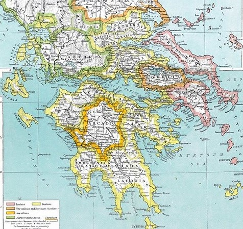
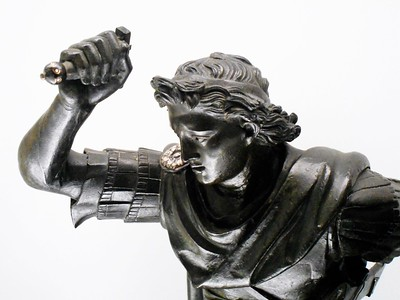
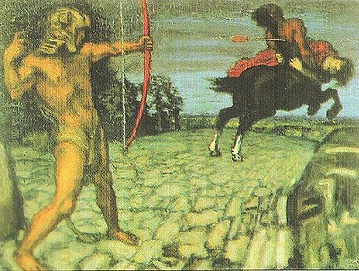

Cinema | Review | Ancient Greece
Movies about Ancient Greece
July 2020
A collection of blockbuster films revolving around the history, myth and philosophy of Ancient Greece.

A Map of Greece | Much has happened on this small piece of earth
Troy (2004)
Even in Ancient Greek times, Troy was a mythic city: it tells you how long ago the story of this movie took place. 'Troy' is based on the book that Herodotos wrote in Ancient Greek times. The movie hosts much gore and action, but completely leaves out the huge role of gods (unlike the original story).
"Herodotos wrote the Illiad in the 12th century BCE"Immortals (2009)
Immortals is another action-packed blockbuster and it's in the same theme as the iconic movie 300. Similar to Troy, this movie shows little myth and presence of gods.
Alexander (2004)
Alexander shows the biography of the king who greatly expanded Macedon: he reached as far as India. Expect a very believable atmosphere and open battle scenes in this movie.
A sculpture of Alexander the Great in the Archeological Museum at Naples (Made in 4th cenutry BCE)
That's because Ancient Crete (the Minoan civilization) was rather infatuated with bulls. Minos had bull horns as ornaments, in architecture and on frescos. Sir Arthur Evans called it: Horns of Consecration (meaning worship).
Sophie's world (1999)
In Sophie's World a Norwegian girl finds a mysterious VCR tape: with it she can talk to the great Ancient Greek philophers (like Socrates and Plato). It is a nice alternative to the action-packed movies about Ancient Greece.
Hercules (2014)
In Hercules, the mythic proportions of Dwayne - The Rock - Johnson make him the perfect embodiment of Heracles. You might find the atmosphere of this film leaning too far toward Hollywood: the visual effects are not so believable. But, it is an awe-inspiring introduction to the story of the Greek hero Heracles.
Hercules is the Roman name for the Greek demigod Heracles.
Wonder Woman (2017)
Wonder Woman portrays a female warrior. In academia and in Ancient Greek itself, women have always had a rather special significance in myth. Wonder Woman obviously embodies a mighty Amazone (female warrior band) fighter.